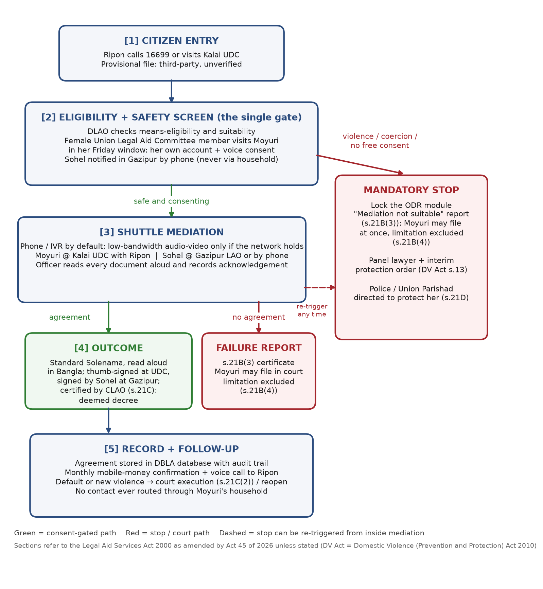

Q4 – Minimum digital ODR process and mandatory stop condition
Pre-case mediation under ss.21B–21D, Legal Aid Services Act 2000 (as amended by Act 45 of 2026) — Moyuri / Ripon case.

Pre-case mediation under ss.21B–21D, Legal Aid Services Act 2000 (as amended by Act 45 of 2026) — Moyuri / Ripon case.
